Tabela Ligowa – 1. Drużyna
| Lp. | Herb | Drużyna | M | Pkt | Z | R | P | Bramki | +/- |
|---|---|---|---|---|---|---|---|---|---|
| 1 | 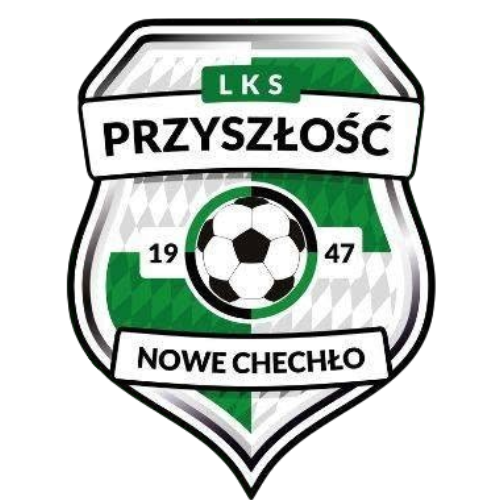 |
LKS PRZYSZŁOŚĆ CHECHŁO NOWE | 0 | 0 | 0 | 0 | 0 | 0:0 | 0 |
| 2 | 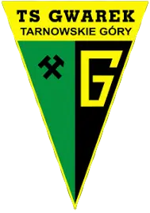 |
TS GWAREK II TARNOWSKIE GÓRY | 0 | 0 | 0 | 0 | 0 | 0:0 | 0 |
| 3 | 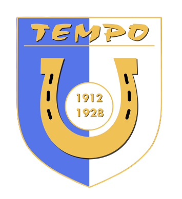 |
LKS TEMPO STOLARZOWICE | 0 | 0 | 0 | 0 | 0 | 0:0 | 0 |
| 4 | GKS ROZBARK BYTOM | 0 | 0 | 0 | 0 | 0 | 0:0 | 0 | |
| 5 | 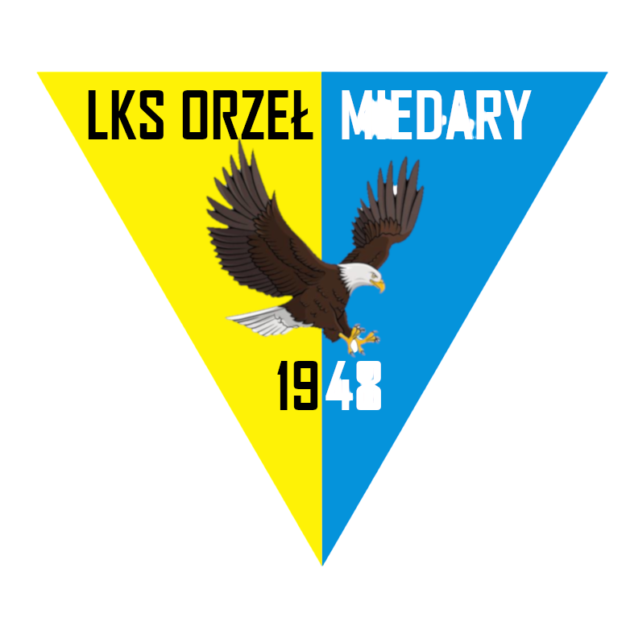 |
LKS ORZEŁ II MIEDARY | 0 | 0 | 0 | 0 | 0 | 0:0 | 0 |
| 6 | LKS SOKÓŁ ORZECH | 0 | 0 | 0 | 0 | 0 | 0:0 | 0 | |
| 7 | UKS SOKÓŁ ZBROSŁAWICE | 0 | 0 | 0 | 0 | 0 | 0:0 | 0 | |
| 8 | KS GÓRNIK II BOBROWNIKI ŚLĄSKIE | 0 | 0 | 0 | 0 | 0 | 0:0 | 0 | |
| 9 | KS STS CZARNI - SUCHA GÓRA | 0 | 0 | 0 | 0 | 0 | 0:0 | 0 | |
| 10 | 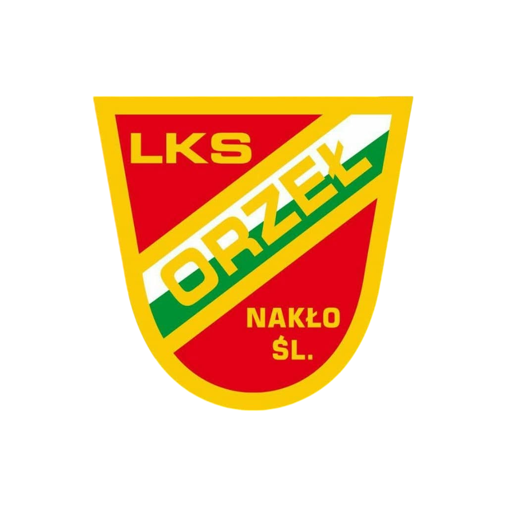 |
LKS ORZEŁ NAKŁO ŚLĄSKIE | 0 | 0 | 0 | 0 | 0 | 0:0 | 0 |
| 11 | GKS ANDALUZJA BRZOZOWICE - KAMIEŃ | 0 | 0 | 0 | 0 | 0 | 0:0 | 0 | |
| 12 | KS NITRON KRUPSKI MŁYN | 0 | 0 | 0 | 0 | 0 | 0:0 | 0 | |
| 13 | LKS PIAST OŻAROWICE | 0 | 0 | 0 | 0 | 0 | 0:0 | 0 | |
| 14 | DKS CZARNI KOZŁOWA GÓRA ⚫ | 0 | 0 | 0 | 0 | 0 | 0:0 | 0 |
Terminarz – mecze Czarnych
Ostatnie Wyniki – mecze Czarnych
Tabela Ligowa – 2. Drużyna (Rezerwy)
| Lp. | Herb | Drużyna | M | Pkt | Z | R | P | Bramki | +/- |
|---|---|---|---|---|---|---|---|---|---|
| 1 | DKS CZARNI II KOZŁOWA GÓRA ⚫ | 1 | 3 | 1 | 0 | 0 | 11:1 | 10 | |
| 2 | 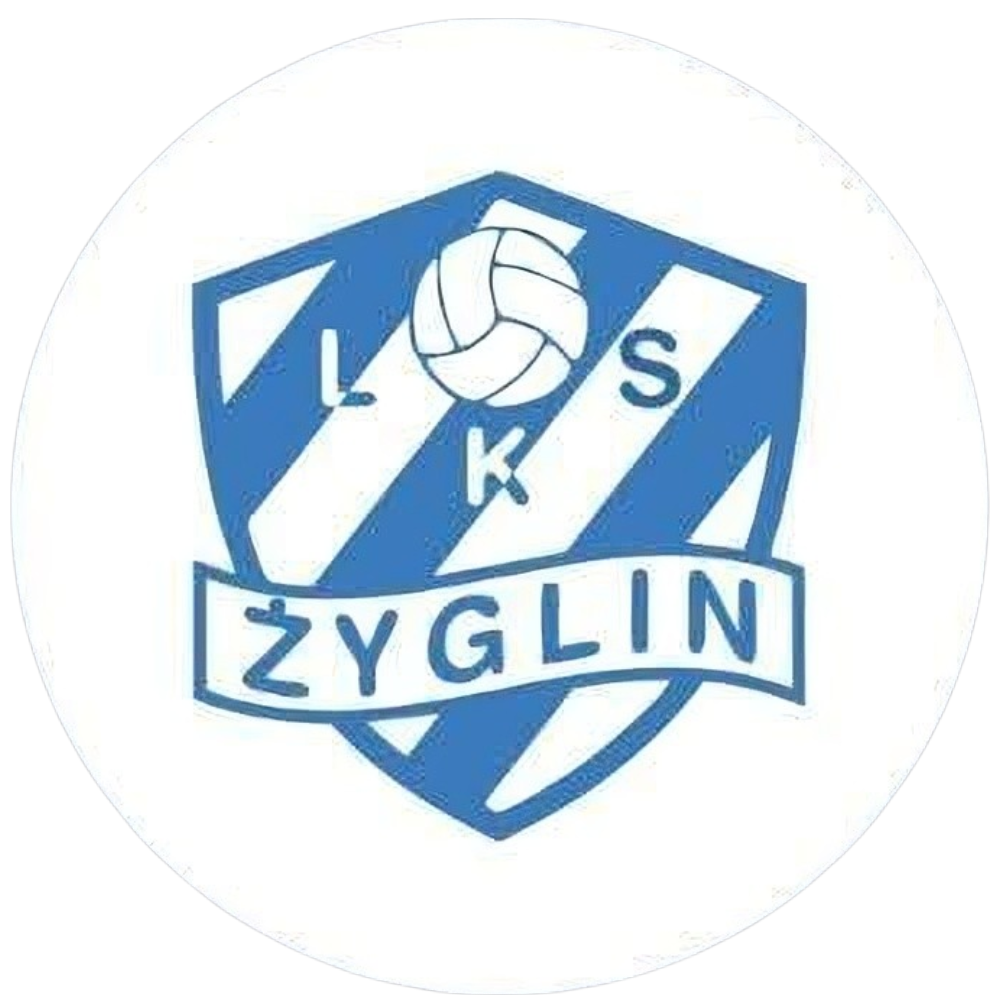 |
LKS ŻYGLIN | 1 | 3 | 1 | 0 | 0 | 7:2 | 5 |
| 3 | TSPN NADZIEJA BYTOM | 1 | 3 | 1 | 0 | 0 | 6:1 | 5 | |
| 4 | LKS UNIA ŚWIERKLANIEC | 1 | 3 | 1 | 0 | 0 | 6:1 | 5 | |
| 5 | GKS ROZBARK II BYTOM | 1 | 3 | 1 | 0 | 0 | 5:3 | 2 | |
| 6 | 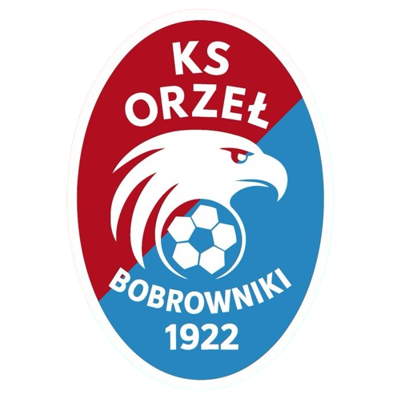 |
KS ORZEŁ BOBROWNIKI | 1 | 3 | 1 | 0 | 0 | 3:1 | 2 |
| 7 | 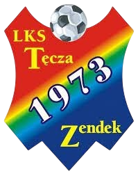 |
LKS TĘCZA ZENDEK | 0 | 0 | 0 | 0 | 0 | 0:0 | 0 |
| 8 | 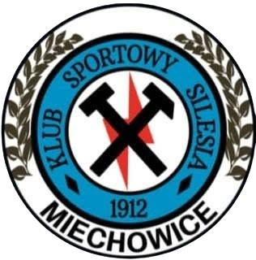 |
KS SILESIA II MIECHOWICE | 0 | 0 | 0 | 0 | 0 | 0:0 | 0 |
| 9 | 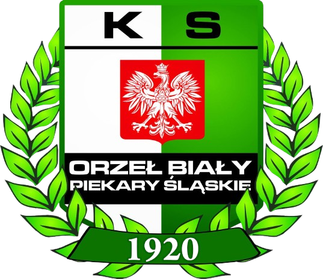 |
KS ORZEŁ BIAŁY II PIEKARY ŚLĄSKIE | 0 | 0 | 0 | 0 | 0 | 0:0 | 0 |
| 10 | PTS RODŁO GÓRNIKI | 1 | 0 | 0 | 0 | 1 | 3:5 | -2 | |
| 11 | 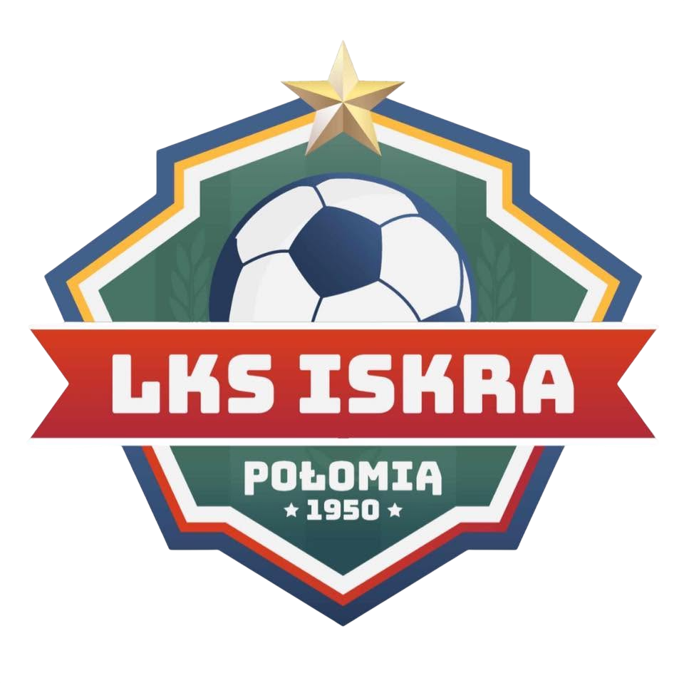 |
LKS ISKRA POŁOMIA | 1 | 0 | 0 | 0 | 1 | 1:3 | -2 |
| 12 | UKS UNIA II STRZYBNICA | 1 | 0 | 0 | 0 | 1 | 2:7 | -5 | |
| 13 | 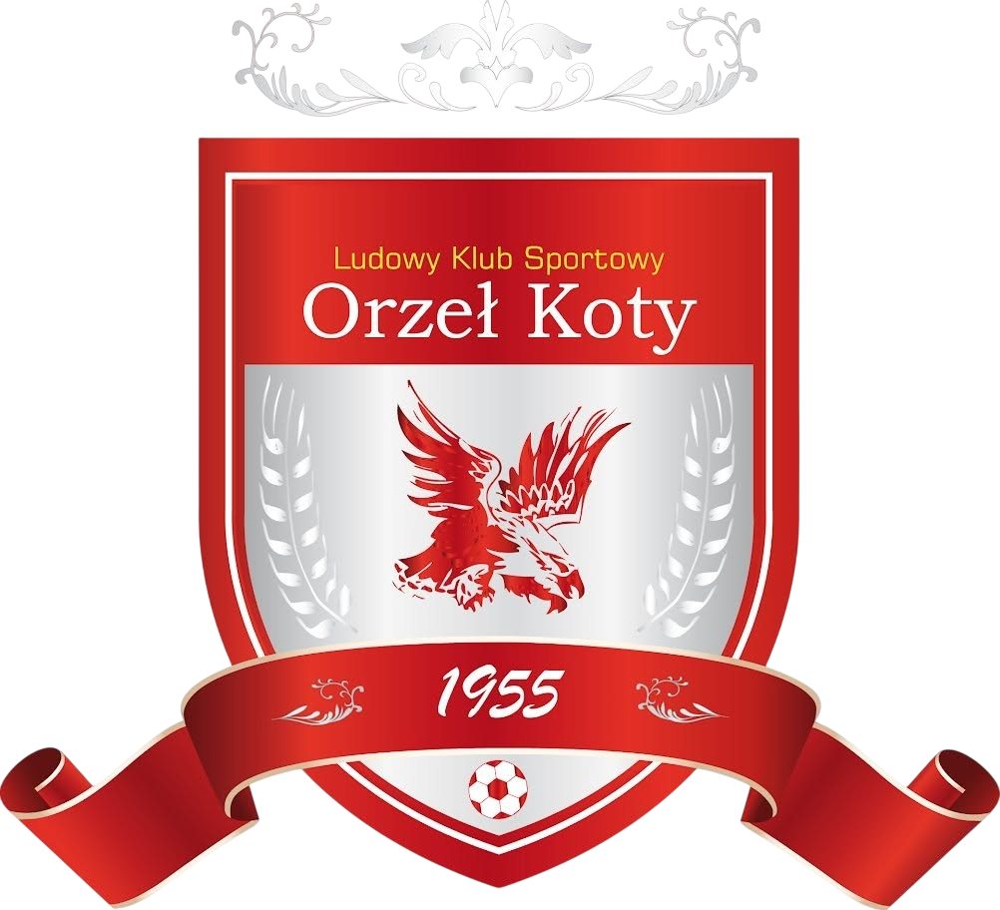 |
LKS ORZEŁ KOTY | 1 | 0 | 0 | 0 | 1 | 1:6 | -5 |
| 14 | 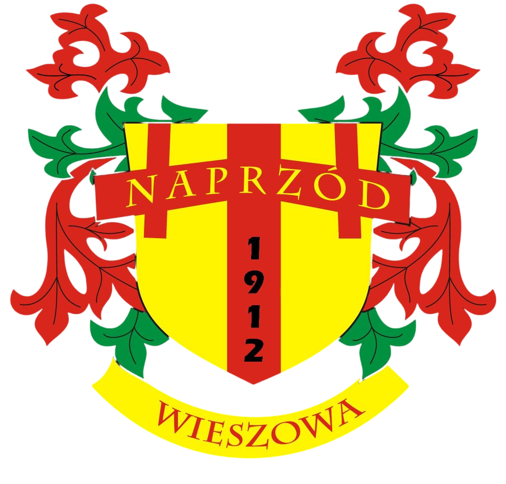 |
LKS NAPRZÓD WIESZOWA | 1 | 0 | 0 | 0 | 1 | 1:6 | -5 |
| 15 | 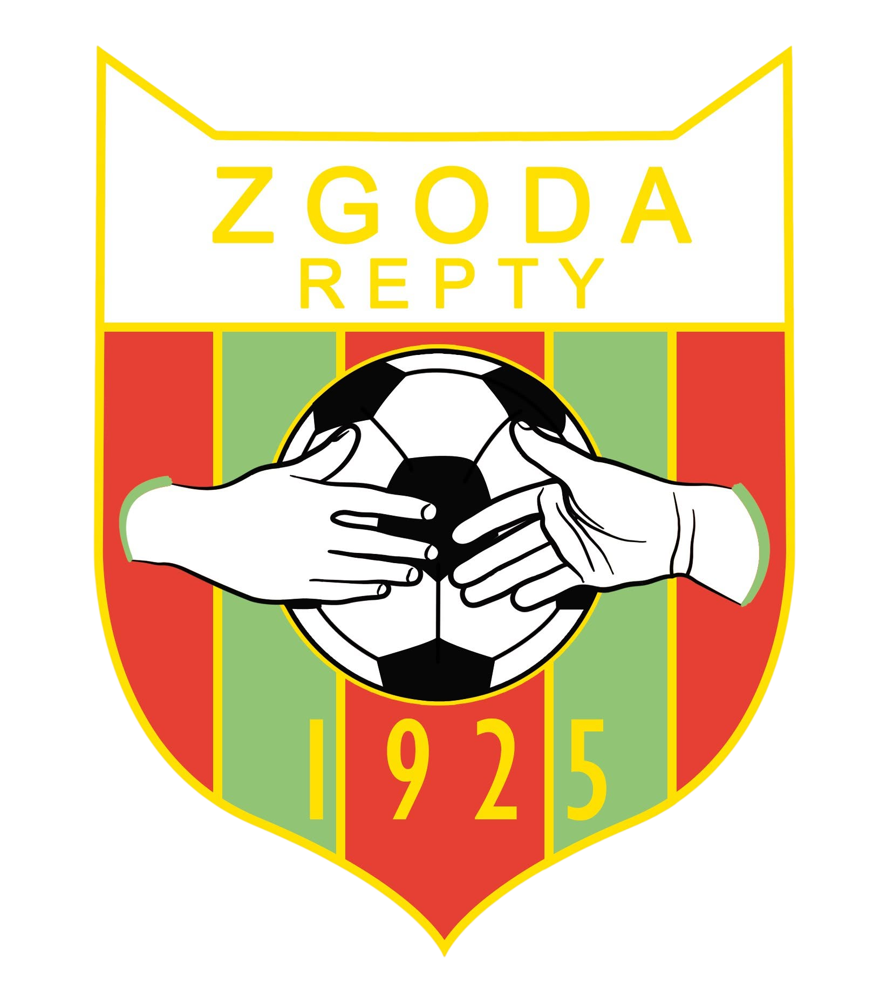 |
LKS ZGODA REPTY | 1 | 0 | 0 | 0 | 1 | 1:11 | -10 |